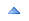

Up To: Contents
See Also: CGI Security
This is intended to be a brief overview of some things you should keep in mind when installing Nagios, so as set it up in a secure manner.
Your monitoring box should be viewed as a backdoor into your other systems. In many cases, the Nagios server might be allowed access through firewalls in order to monitor remote servers. In most all cases, it is allowed to query those remote servers for various information. Monitoring servers are always given a certain level of trust in order to query remote systems. This presents a potential attacker with an attractive backdoor to your systems. An attacker might have an easier time getting into your other systems if they compromise the monitoring server first. This is particularly true if you are making use of shared SSH keys in order to monitor remote systems.
If an intruder has the ability to submit check results or external commands to the Nagios daemon, they have the potential to submit bogus monitoring data, drive you nuts you with bogus notifications, or cause event handler scripts to be triggered. If you have event handler scripts that restart services, cycle power, etc. this could be particularly problematic.
Another area of concern is the ability for intruders to sniff monitoring data (status information) as it comes across the wire. If communication channels are not encrypted, attackers can gain valuable information by watching your monitoring information. Take as an example the following situation: An attacker captures monitoring data on the wire over a period of time and analyzes the typical CPU and disk load usage of your systems, along with the number of users that are typically logged into them. The attacker is then able to determine the best time to compromise a system and use its resources (CPU, etc.) without being noticed.
Here are some tips to help ensure that you keep your systems secure when implementing a Nagios-based monitoring solution...